In this project, we implemented a 3D renderer that utilizes ray tracing. We were able to use our renderer to produce realistic looking images of different objects given a light source by simulating rays of light and shadows. Some of the things that we implemented include creating rays coming from the camera pointing on a scene, using 0/1/1+ bounces and collisions to determine pixel colors, simulating direct and indirect lighting, and implementing adaptive sampling.
This project was very difficult and time consuming, but also very rewarding. It was fascinating to see how mathematical algorithms like Monte Carlo Integration and the Russian Roulette algorithm were utilized in our code.
Our ray tracing algorithm uses rays starting from a “camera” going into our space to emulate light running through an image. We use the ray equation r(t) = o + td, where o is the coordinates of the camera, d is the unit vector following along the ray’s direction as found using the coordinates from the Assignment 3-1 spec, and t is a double that traces the points of the ray between min_t and max_t values defining its bounds.
To sample pixels, we take in input coordinates (x, y) for the bottom-left corner of a pixel, and rescale it relative to the width and height of the image by generating rays offset from (x,y) by an an amount generated by our grid sampler. The number of times we do this is determined by a num_samples variable. We estimate the global radiance illumination of the ray, by taking the mean of the values calculated for each ray.
Primitives are mathematical objects that have equations defining them, such as triangles on a plane and spheres. To calculate our intersection between rays and primitives, we use the equations of a given ray and primitive and solve for t. If t exists between the bounds of the ray, we have found the intersection point; otherwise, the ray does not intersect the primitive. The Möller–Trumbore algorithm is an efficient way of finding intersections between triangles and rays, and is what we have used to calculate our intersection. The algorithm is solved from first setting the ray equation and barycentric triangle coordinates equal, o + td = (1-n1-n2) * p0 + n1p1 + n2p2; five new vectors, e1, e2, s, s1, and s2 are defined off of those algorithms to perform the algorithm. Using Möller–Trumbore minimizes the total arithmetic operations necessary to calculate the intersection on a hardware level.
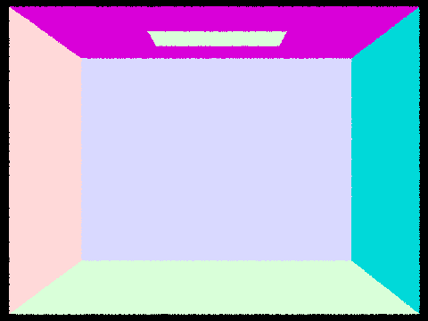 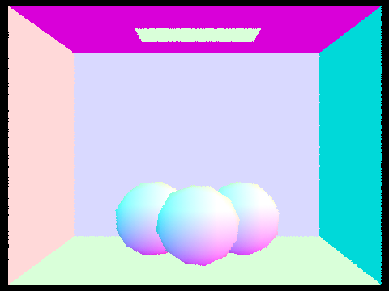 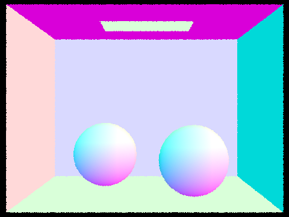Above, we see renderings of the files CBempty, CBgems, and CBspheres using normal shading.
Dev comments: Originally, for our triangle intersection function, we were trying to use a variation of plane intersection to implement it. After struggling for a while with bugs, we decided to switch over to using the Möller–Trumbore algorithm to implement the function. Once we implemented Möller–Trumbore in our code base, we had our variable numbers for n and p indexed to 1 rather than 0, leading to some misshading of our meshes at first. Once we fixed this, things went smoothly from there.Originally, for our triangle intersection function, we were trying to use a variation of plane intersection to implement it. After struggling for a while with bugs, we decided to switch over to using the Möller–Trumbore algorithm to implement the function. Once we implemented Möller–Trumbore in our code base, we had our variable numbers for n and p indexed to 1 rather than 0, leading to some misshading of our meshes at first. Once we fixed this, things went smoothly from there.
Our BVH (bounding volume hierarchy) tree construction algorithm is as follows: For each node, find the bounding box of the node. If our number of primitives in the node is below the maximum leaf size, we return the node. Else, we start a recursive case. We determine what the largest dimension is to create left and right subnodes. Along that axis, we chose to look at the average of all the centroids of the primitives, Half of the primitives go into a left node, and the other half goes into a right node. The two nodes individually run the algorithm again from the top.
Below, we see the renderings of Max Planck, beast, and Lucy. These renders are large enough that they do not render in a reasonable timefrme without using BVH acceleration.
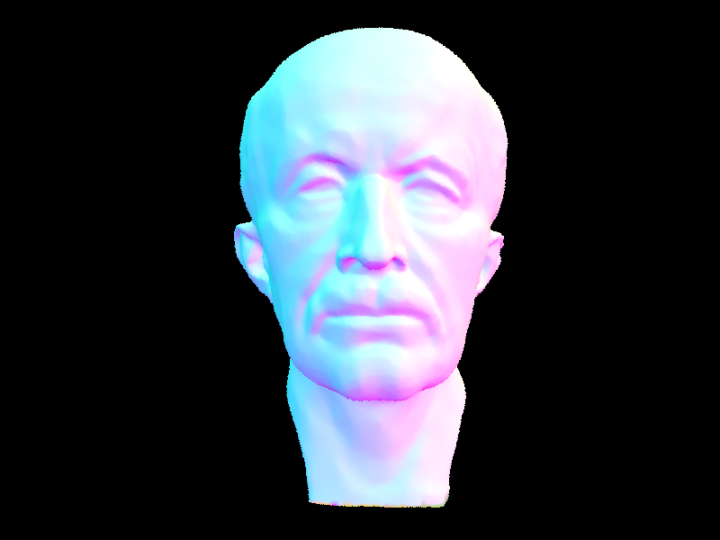 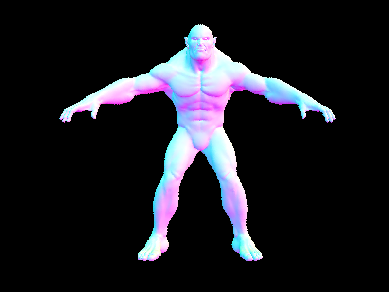 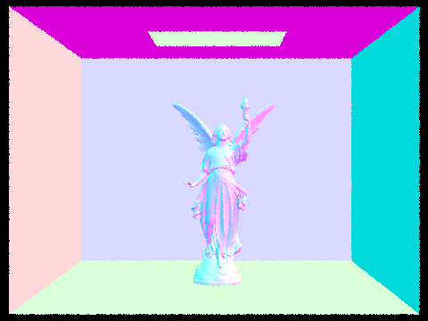The rendering of maxplanck, beast, and CBlucy uses 50801, 64618, and 133796 primitives respectively, takes 0.1230, 0.0551, and 0.1777 seconds to render with BVH, and takes over 20, 22, and 30 minutes to render without BVH.
Rendering times with BVH acceleration are noticeably faster on more complex geometries than without. This is because by recursively splitting our set of primitives into subsets of bounding boxes containing less and less primitives, we are able to effectively reduce our expected cost of ray intersection. Instead of having to check for an intersection with every individual primitive when we want to find the closest intersection of a ray, we now only have to look at our set of primitives one half at a time (recursive calls on the left and right side of our BVH tree structure), changing our expected cost for n primitives from O(n) to O(log(n)).
Dev comments: The main problem we ran into in this section was creating the heuristic for the split point of primitives for the BVH tree. We were originally getting all of the primitives being put in our right node and 0 being put in our left node for our heuristic. Once we changed the heuristic to our current implementation (the centroid of a bbox of the primitives’ centroids), our primitives were split evenly into a bushy tree. Additionally, we had a small issue with C++ variable definitions that led us to use an undefined int in our code, resulting in memory issues before being resolved.
For uniform hemisphere sampling, we take a random direction from a hemisphere, create a ray going outward, and test if there is an intersection with another primitive. If there is, we add the calculated radiance for calculation using the Monte Carlo estimation method. This equation is given as follows, from the project spec.

Our uniform light sampling cycles through our scene lights. For point lights, we take one sample; area lights will have a number of samples determined by num_samples. For each sample, we obtain an angle, distance for radiance, and pdf using sample_L. The Monte Carlo formula is as it was with uniform hemisphere sampling. Avoiding objects in the wrong direction from our light source, we do a cos_theta check to guarantee we only proceed with applying Monte Carlo on objects with valid intersections. We have min_t and max_t variables to ensure that we avoid floating point errors with the object that we are shooting the ray from itself, or objects behind other objects.
Below are bunny and coil meshes rendered with uniform hemisphere sampling.
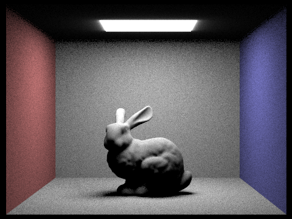 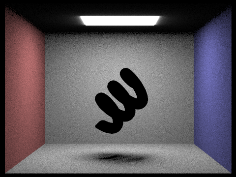Below are bunny and coil meshes rendered with lighting importance sampling.
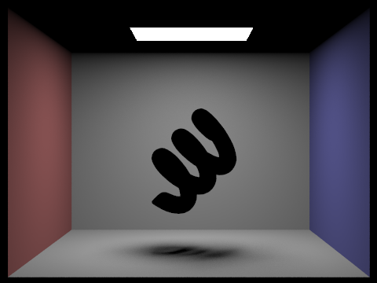Below is the bunny scene rendered with 1, 4, 16, and 64 light rays respectively when using light sampling.
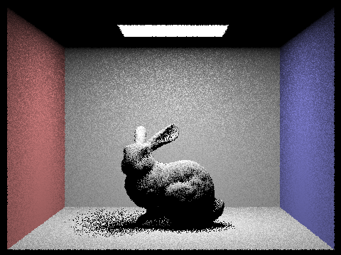 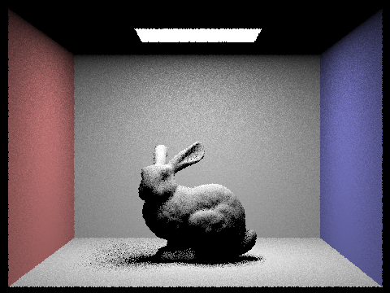Uniform hemisphere sampling creates more uncertainty, as rays may not reach light sources. Point lights do not work with this form of sampling. Light importance sampling makes use of our knowledge of light sources to guarantee ray intersections with light sources giving us more valuable radiance data to work with and reduces noise. As rays come out of lights now, point lights are able to be factored in for the rendering of meshes.
Dev comments: The estimate_direct_lighting_importance function gave us the most problems by far. Our outputs were not looking how they were supposed to (too many black dots clumped in incorrect places). After making adjustments to how we calculated our shadow rays (tweaking their origin, direction, and min/max t values) and our L_out calculation (mainly cosine issues), we were able to get the correct outputs. Additionally, deciding if our inputs/outputs should be in the object or world space resulted in a large amount of issues in this part, and required a lot of thoughtfulness when thinking about rays.
In our implementation of indirect lighting, we use Russian Roulette estimation, where we may get a fair estimate of our lighting (and prevent infinite recursion). Our implementation runs recursively, where we use a pdf to determine if a ray continues bouncing or calls one_bounce_radiance marking our final bounce. A depth variable introduced maintains an internal count for how many bounces the ray has gone through and returns 0 when we have reached our max_ray_depth.
Below, we see our bunny as ran using indirect lighting.
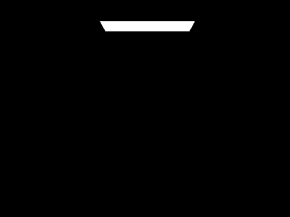Dev comments: The Russian Roulette component of this part was tricky, especially with its special cases. Originally, we had it so it was a direct 70% likeliness of continuing the algorithm per function call, regardless of current ray depth and the max ray depth. After running into problems, we added lines of code to 1. Skip the Russian Roulette once if indirect illumination is "turned on" (max ray depth > 1) and 2. The current ray depth is equal to the max ray depth. Once we implemented this, our problem was fixed.
The point of adaptive sampling is to help reduce noise in our rendered images by dynamically increasing the number of samples for each pixel based on how “difficult” they are to converge. We determine this convergence point by calculating an “I” for each pixel, which is equal to 1.96 times the standard deviation of the pixel divided by the square root of the number of samples n already sampled through a pixel. Once this “I” shrinks below a certain threshold (in this case, max tolerance times the mean), we can stop tracing rays for that pixel. In code, we achieve this by checking if the convergence of a pixel is less than or equal to the threshold (mentioned earlier) every samplesPerBatch samples. If it is, we break out of our sampling loop and update our pixel and sampleCountBuffer. Otherwise, we continue to trace rays.
Below, we have picked the dragon scene to render at 2048 samples per pixel, with both its sample rate image and noise-free result.
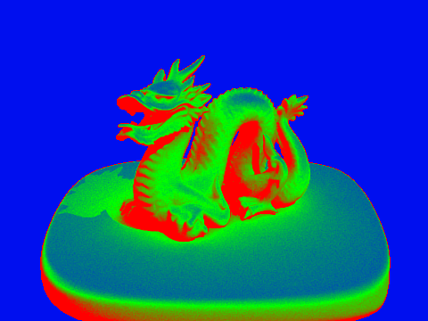 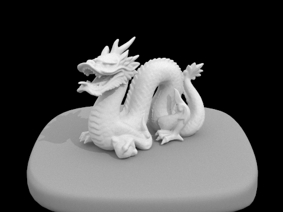Dev comments: Our main issue was that, originally, we were getting a completely blue screen for our rate pictures. When we moved our illuminance calculations to the end of our main for loop (instead of at the beginning) and calculated our convergence variable separately, the rate picture output was what we expected.
As partners, we collaborated mostly in-person (Berkeley Way West) and occasionally remotely (during Spring Break). We also attended as many project parties and office hours in order to get the most assistance as possible. Our collaboration itself went well, although oftentimes, we would get stuck on a certain part of the project for several hours. Usually, it wasn’t until frequent Piazza scrubbing or OH/Project Party help that we were able to continue. We learned that we need to start the projects as early as we possibly can, and show up to as many OH’s and Project Parties as our schedules allow (and show up early, to make sure we get high up on the queue to increase our chances of getting more help).
Our webpage is at https://cal-cs184-student.github.io/sp22-project-webpages-Lukatastic/proj3-1/index.html